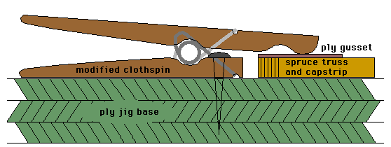

| The truss ribs of a Hatz are built up from many pieces of 1/4" square Sitka spruce with 1/16" Mahogany ply gussets and 1/4" Birch ply pieces for the nose and trailing edge. Working in a waxed jig, accurate alignment can be maintained while the glue cures. I decided not to nail the gussets in place to save weight, and to reduce the complexity of assembly, thus depending on T-88 epoxy for the integrity of the ribs.
During assembly, clamping the gussets in the rib jig is something that can give folks some trouble. I thought about it a lot, and finally came up with a simple adaptation of a common clothespin.  As you can see, the clothespin is trimmed and screwed to the ply jig base, allowing the remaining leg to act as a clamp, holding the gusset while the epoxy cures. I placed one of these clamps outside the outline of the rib at each gusset location. For some of the larger gussets, I used a pair of the clamps. Additionally, scraps of 1/4" spruce 2-3" long, were used under the clamps to distribute the clamping loads. After curing for at least 12 hours, the rib is removed from the jig. While the next rib was assembled, I also placed the gussets on the opposite side of the previous rib. Waste from mixing excessive epoxy was thus minimized. For what it is worth, the 32 ribs that were assembled in the jig used slightly more than 1 pint of T-88 epoxy. My assembly procedure was as follows.
|
Copyright 1998, Thayer Syme. All rights reserved